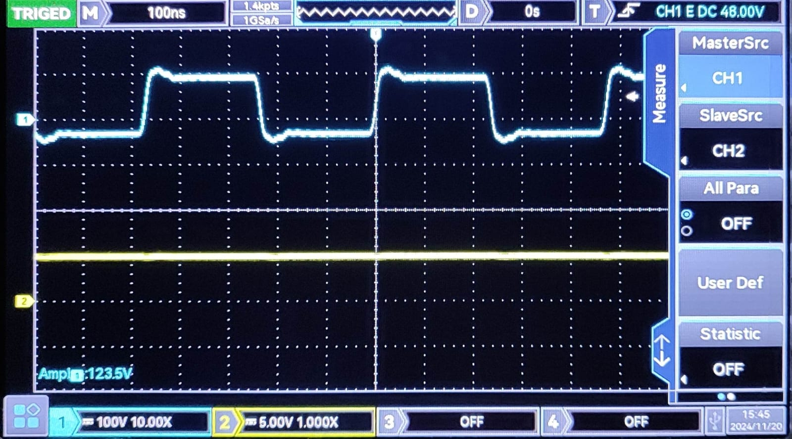

Introduction
The OFT can be used to set up two fibre optic digital links: one at a wavelength of 650 nm and the other at 850 nm. LED1, in the Optical Tx1 block, is an 850 nm LED, and LED2, in the Optical Tx2 block, is a 650 nm LED. PD1, in the Optical Rx1 block, is a PIN detector whose current is proportional to the optical power falling on the detector. The received signal is amplified and converted to a TTL signal using a comparator. The GAIN control plays a crucial role in this conversion. PD2, in the Optical Rx2 block, is another receiver that directly outputs a TTL signal. Both PIN detectors can receive 650 nm as well as 850 nm signals, though their sensitivity is lower at 650 nm.
Objective
To learn to set up 850 nm and 650 nm digital links and to measure the maximum bit rate supportable on these links. Setting up a digital link is central to the rest of the experiments described in this manual.
Equipment Required
- OFT
- Two-channel, 20 MHz Oscilloscope
- Function generator, 1 Hz - 10 MHz
Procedure
Set Up
- The interfaces used in the experiment are summarized in Table 2.1. Identify them on the OFT with the help of the layout diagram (Fig 2.1). The block diagram of the subsystems used in this experiment is shown in Fig 2.2. Set the jumpers and switches as given in Table 2.1 to start the experiment.
- Set the switch SW8 to the DIGITAL position.
- Connect a 1 m optical fibre between LED1 and the PIN detector PD1.
Setting Up a Digital Link at 850 nm
- Remove the shorting plugs of the coded data shorting links, S6 in the Manchester coder block and S26 in the Decoder & Clock Recovery block. Ensure that the shorting plug of jumper JP2 is across posts B & A1 [for PD1 receiver selection]. Feed a TTL signal of about 20 kHz from the function generator to post B of S6. Use the BNC I/Os for feeding and observing signals as described in Experiment 1. Observe the received analog signal at the amplifier post P31 on channel 1 of the oscilloscope [trigger the oscilloscope with the channel 1 signal]. Note that the signal at P31 gets cut off above 3.5 V. Increase and decrease the GAIN and observe the effect.
- Observe the received signal at post A of S26 on channel 2 of the oscilloscope while still observing the signal at P31 on channel 1 [trigger the oscilloscope on channel 1]. Note that the signal at S26 is the inverted version of the signal at P31. Vary the GAIN potentiometer setting. Note that even though the received signal at P31 changes with gain, the output at S26 does not. Reduce the gain until the signal at P31 is less than 0.5 V. [If the signal does not drop below 0.5 V even at the lowest gain setting, pull the fibre out slightly at the receiver to reduce the level below 0.5 V.] Note that the signal at S26 now becomes all high. This is because the P31 signal is fed to the comparator-cum-inverter to give the signal at S26 as shown in Fig 2.3. The comparator reference voltage is 0.55 V, and unless the signal amplitude is greater than 0.55 V, the comparator output is high. Verify this.
- Set the gain such that the signal at P31 is about 2 V. Observe the input signal from the function generator on channel 1 and the received TTL signal at post A of S26 on channel 2. Vary the frequency of the input signal and observe the output response. What is the maximum bit rate that can be transmitted on this digital link?
- Repeat Steps 4, 5, and 6 with the 3 m fibre.
Setting Up a Digital Link at 650 nm
- Use the 1 m fibre and insert it into LED2. Observe the light output at the other end of the fibre [keeping it away from the eye]. The output is a bright red signal because the light output at around 650 nm is in the visible range. The other end of the fibre should now be inserted into PD1.
- Repeat Steps 4, 5, and 6 with this new link.
- Use the 3 m fibre and set up the 650 nm digital link between LED2 and PD1. Repeat Steps 4, 5, and 6.
Setting Up a TTL to TTL Digital Link at 650 nm
- Change the shorting plug in jumper JP2 across posts B & A2 [for selection of PD2 receiver]. Use the 1 m fibre to connect LED2 and optical receiver PD2.
- Feed a TTL signal of 20 kHz at post B of S6 and observe the received TTL signal at post A of S26. Display both signals on the oscilloscope on channels 1 and 2 respectively [triggering with channel 1]. Note that the GAIN control does not play any role now in the operation of the link. The receiver at PD2 is an integrated PIN diode and comparator that directly gives out a TTL signal. Vary the frequency and find the maximum bit rate that can be transmitted on this link.
- Repeat Steps 11 and 12 using the 3 m fibre.
Setting Up an 850 nm TTL to Direct Digital Link
- Use the 1 m fibre to connect LED1 and PD2. Feed a TTL signal of 20 kHz at post B of S6 and observe the received signal at post A of S26. Display both signals on the oscilloscope. An 850 nm TTL to direct digital link is obtained. Vary the frequency and find the maximum bit rate that can be transmitted on this link.
- Repeat Step 14 with the 3 m fibre.
Comparing Responsitivity of PIN Diode at 850 nm and 650 nm
- Change the shorting plug in JP2 to connect A1 and B (for PD1 receiver selection). Using the 1 m fibre, connect LED1 (850 nm) and PD1. Let the GAIN control be at the minimum level. Feed a 20 kHz TTL signal at post B of S6. Measure the peak-to-peak voltage at P31 and designate it as V1.
- Now connect the fibre between LED2 (650 nm) and PD1 without changing any other setting. Measure the peak-to-peak voltage at P31 and designate it as V2.
- The factory setting for the light output at the end of 1 m fibre for LED1 is 3 dB higher (two times) than that for LED2. The PIN diode current "i" can be written as i = ρP, where P is the optical intensity of the light falling on the detector and ρ is the responsitivity. The voltage at P31 is directly proportional to the PIN diode current "i". Using the results of Steps 16 and 17, compare the responsitivity of the diode at 650 nm and 850 nm using the expression V1 / V2 = (ρ1 P1) / (ρ2 P2), where P1 is twice P2 (at factory setting) and ρ1 and ρ2 are responsitivities of the diode at 850 nm and 650 nm respectively.

Block Diagram for Experiment 2
Comparator to convert received signal into a TTL signal
Interface Details
| S.No | Identification Name | Function | Location |
|---|---|---|---|
| 1 | SW8 | Analog/Digital selection switch. Should be set to DIGITAL position | |
| 2 | LED1 (850 nm) | 850 nm LED | Optical Tx1 Block |
| 3 | LED2 (650 nm) | 650 nm LED | Optical Tx2 Block |
| 4 | PD2 | Optical Receiver with TTL output | Optical Rx2 Block |
| 5 | PD1 | PIN Detector | Optical Rx1 Block |
| 6 | P31 | PIN Detector signal after gain | Optical Rx1 Block |
| 7 | JP2 | PD1/PD2 Receiver Select. Posts B & A1 should be shorted to select PD1 | |
| 8 | GAIN | GAIN Control Potentiometer | Optical Rx1 Block |
| 9 | S6 (coded data) | Manchester Coded Data shorting link. Post A: Coder output, Post B: Input to Tx1/Tx2/Electrical. Posts A & B should be shorted | Manchester Coder Block |
| 10 | S26 (coded data) | Received Manchester Coded data shorting link. Post A: Receiver output (Rx1/Rx2), Post B: Input to decoder & clock recovery block. Posts A & B should be shorted | Decoder & Clock Recovery Block |
| 11 | I/O1, I/O2, I/O3 | Input/Output BNCs and posts for feeding in and observing signals |
Observations
The following observations were recorded for the digital links at 850 nm and 650 nm using the oscilloscope:
| Parameter | Digital Link at 850 nm | Digital Link at 650 nm |
|---|---|---|
| Cutoff Frequency | 2.12 MHz | 2.83 MHz |
| Amplitude | 5 V | 5 V |
| Oscilloscope Output Image |
 Oscilloscope Output for 850 nm (Cutoff Frequency: 2.12 MHz, Amplitude: 5 V) |
Oscilloscope Output for 650 nm (Cutoff Frequency: 2.83 MHz, Amplitude: 5 V) |
TTL to TTL Digital Link
| Parameter | TTL to TTL Output (850 nm) | TTL to TTL Output (650 nm) |
|---|---|---|
| Description | Stable TTL signal observed with a source frequency of 850 kHz | Stable TTL signal observed with a source frequency of 650 kHz |
| Oscilloscope Output Image |
TTL to TTL Output for 850 nm |
TTL to TTL Output for 650 nm |


Conclusion
This experiment successfully demonstrated the setup of digital fibre optic links at wavelengths of 650 nm and 850 nm using the provided transmitters and receivers. The PIN diode (PD1) was shown to produce a current output proportional to the incident light intensity, with the received signal being amplified and processed through a comparator to generate a digital output signal. The experiment also involved measuring the maximum bit rates supported by these links, revealing cutoff frequencies of 2.83 MHz for 650 nm and 2.12 MHz for 850 nm. Additionally, the relative responsivities of the PIN diode at 650 nm and 850 nm were evaluated, providing insights into its performance across different wavelengths.